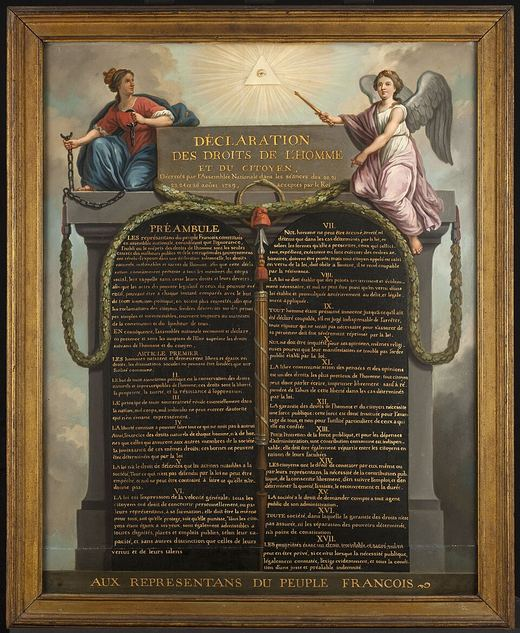
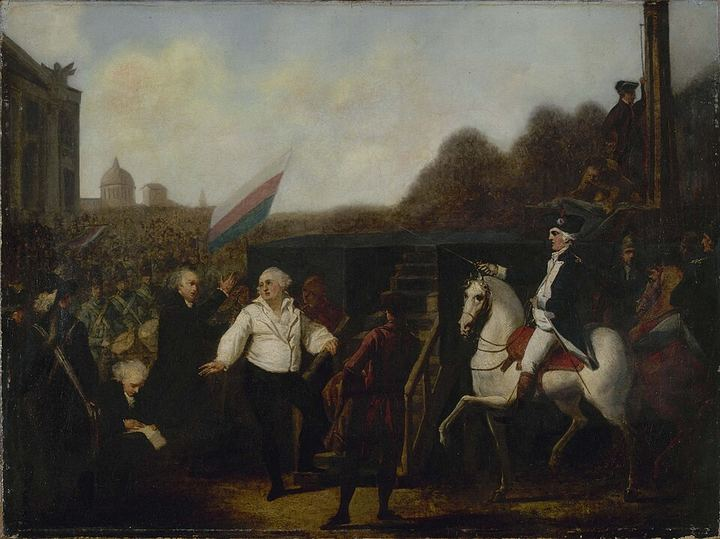

1789La Revolució Francesa i AndorraModerna
La ruptura amb França és de 1793; 1789 és l'inici de la Revolució
El copríncep que ja no hi era: què va canviar la Revolució Francesa a Andorra
Context històric
Des del Pariatge de 1288, la sobirania d'Andorra es compartia entre el bisbe d'Urgell i un segon copríncep francès, que en l'època de la Revolució era el rei de França. El 1789 la Revolució va començar a desmuntar l'ordre feudal a França, i això afectava un vincle de naturalesa feudal com el coprincipat.
L'efecte no va ser immediat. La ruptura és de 1793, l'any de l'execució de Lluís XVI. Segons les fonts consultades, les autoritats franceses es van negar a cobrar la quèstia, el tribut que pagaven les Valls, i van renunciar al títol de copríncep. Andorra va quedar sota l'autoritat única del bisbe d'Urgell i va perdre franquícies i privilegis econòmics. Al principi les autoritats andorranes no van poder actuar, i només cap al 1801 van iniciar gestions per recuperar el coprincipat. El trencament va durar fins al 1806.
S'ha interpretat el coprincipat com una anomalia jurídica en un món d'estats nació; és una lectura general, no una dada. Les fonts tampoc no precisen quin organisme francès va rebutjar el tribut ni amb quin acte, i aquest punt continua obert.
Dades, lectures i dubtes
- Dada
- Des del Pariatge de 1288 la sobirania es compartia entre el bisbe d'Urgell i el rei de França. La ruptura és de 1793; fins al 1806 Andorra va quedar sota el bisbe com a única autoritat.
- Interpretació
- Veure el coprincipat com una anomalia jurídica és una lectura general que fa la Viquipèdia, no una dada.
- Qüestió oberta
- Quin organisme francès va rebutjar el tribut i amb quin acte.
Multimèdia

